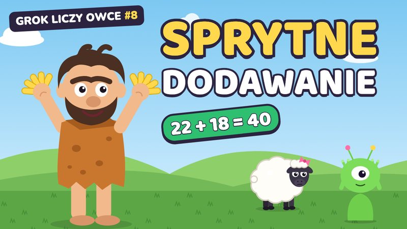
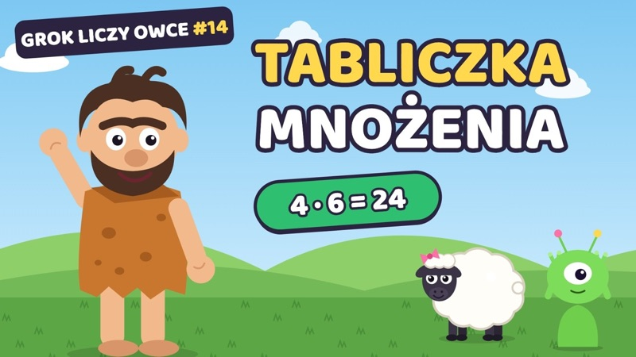

Matematyka · klasa 4 · odcinek #17
Sprytne mnożenie w pamięci
Jak mnożyć szybko w pamięci? Rano owce Groka stoją w 12 rzędach po 6. Grok liczy po jednej i się gubi, a Kosmita od razu wie: 72. W filmie poznajesz mnożenie przez 10, 100 i 1000, mnożenie liczb z zerami na końcu, zmianę kolejności czynników i mnożenie po kawałku, a na koniec iloczyny, które warto zapamiętać.
Przykład krok po kroku
Owce stoją w 12 rzędach, w każdym po 6. Ile jest owiec?
- Dzielimy stado na 10 rzędów i 2 rzędy.
- 10 · 6 = 60 i 2 · 6 = 12.
- 60 + 12 = 72. Owiec jest 72.

Poćwicz w grze: Zera na końcu
Pastwisko do tego odcinka w darmowej grze „Policz stado!”. Bez logowania, działa na telefonie i na tablicy interaktywnej.
Zagraj: Zera na końcuPytania i odpowiedzi
Gdzie dopisać zera przy mnożeniu przez 10, 100 lub 1000?
Zawsze na końcu liczby. Zero dopisane z przodu nic nie zmienia: 09 to po prostu 9, a 9 · 10 = 90.
Dlaczego 800 · 50 to 40 000, a nie 4000?
Najpierw mnożymy 8 · 5 = 40, a potem dopisujemy trzy odrzucone zera. Jedno zero jest już w liczbie 40, więc wynik ma cztery zera.
Inne tematy: matematyka klasa 4
 Liczby naturalne
Liczby naturalne
 Oś liczbowa
Oś liczbowa
 Dodawanie i odejmowanie: składnik, suma, odjemna, odjemnik, różnica
Dodawanie i odejmowanie: składnik, suma, odjemna, odjemnik, różnica
 Szacowanie
Szacowanie

Sprytne dodawanie w pamięci Wielka powtórka: liczby naturalne i działania Zadania tekstowe w trzech krokach Sprytne odejmowanie w pamięci
Sprytne odejmowanie w pamięci

Tabliczka mnożenia Tabliczka dzielenia Sprytne dzielenie w pamięci
Sprytne dzielenie w pamięci